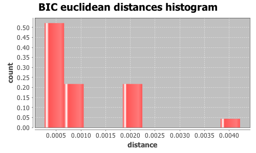
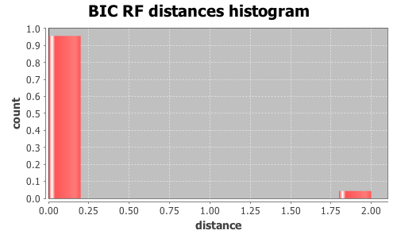

Application Meta
jModeltest 2.1
(c) 2011-onwards D. Darriba, G.L. Taboada, R. Doallo and D. Posada,(1) Department of Biochemistry, Genetics and Immunology
University of Vigo, 36310 Vigo, Spain.
(2) Department of Electronics and Systems
University of A Coruna, 15071 A Coruna, Spain.
e-mail: ddarriba@udc.es, dposada@uvigo.es
Wed Aug 26 19:03:33 EDT 2015
Mac OS X 10.10.5, arch: x86_64, bits: 64, numcores: 4
| Citation: | Darriba D, Taboada GL, Doallo R and Posada D. 2012. "jModelTest 2: more models, new heuristics and parallel computing". Nature Methods 9, 772. |
 Back to top
Back to top Settings
Arguments = -d group3/group3.txt.gene_352.phy -s 3 -i -g 4 -f -BIC -tr 7 -o group3out/g3outgene_352.txtInput Alignment: "group3/group3.txt.gene_352.phy"
NumTaxa = 17
Length = 1,683
Phyml version = 3.0
Phyml binary = PhyML_3.0_macOS_i386
Candidate models = 24
number of substitution schemes = 3
including models with equal/unequal base frequencies (+F)
including models with/without a proportion of invariable sites (+I)
including models with/without rate variation among sites (+G) (nCat = 4)
Optimized free parameters (K) = Substitution parameters + 31 branch lengths + topology
Base tree for likelihood calculations = Maximum Likelihood
Tree topology search operation = NNI
Model Optimization Results
| ID | Name | Partition | -lnL | p | fA | fC | fG | fT | ti/tv | R(a) | R(b) | R(c) | R(d) | R(e) | R(f) | p-inv | shape |
|---|---|---|---|---|---|---|---|---|---|---|---|---|---|---|---|---|---|
| 1 | JC | 000000 | 3276.2147 | 32 | - | - | - | - | - | - | - | - | - | - | - | - | - |
| 2 | JC+I | 000000 | 3238.7680 | 33 | - | - | - | - | - | - | - | - | - | - | - | 0.8710 | - |
| 3 | JC+G | 000000 | 3245.2015 | 33 | - | - | - | - | - | - | - | - | - | - | - | - | 0.0210 |
| 4 | JC+I+G | 000000 | 3237.5671 | 34 | - | - | - | - | - | - | - | - | - | - | - | 0.7750 | 0.8030 |
| 5 | F81 | 000000 | 3264.3244 | 35 | 0.2774 | 0.2083 | 0.2386 | 0.2757 | - | - | - | - | - | - | - | - | - |
| 6 | F81+I | 000000 | 3227.5950 | 36 | 0.2760 | 0.2095 | 0.2396 | 0.2750 | - | - | - | - | - | - | - | 0.8670 | - |
| 7 | F81+G | 000000 | 3233.5199 | 36 | 0.2768 | 0.2088 | 0.2390 | 0.2754 | - | - | - | - | - | - | - | - | 0.0210 |
| 8 | F81+I+G | 000000 | 3226.4168 | 37 | 0.2760 | 0.2096 | 0.2395 | 0.2750 | - | - | - | - | - | - | - | 0.7630 | 0.7620 |
| 9 | K80 | 010010 | 3227.2589 | 33 | - | - | - | - | 3.3197 | - | - | - | - | - | - | - | - |
| 10 | K80+I | 010010 | 3189.1430 | 34 | - | - | - | - | 3.4734 | - | - | - | - | - | - | 0.8720 | - |
| 11 | K80+G | 010010 | 3195.8249 | 34 | - | - | - | - | 3.3866 | - | - | - | - | - | - | - | 0.0210 |
| 12 | K80+I+G | 010010 | 3187.8977 | 35 | - | - | - | - | 3.4897 | - | - | - | - | - | - | 0.7820 | 0.8300 |
| 13 | HKY | 010010 | 3214.7855 | 36 | 0.2771 | 0.2082 | 0.2374 | 0.2774 | 3.3058 | - | - | - | - | - | - | - | - |
| 14 | HKY+I | 010010 | 3178.4971 | 37 | 0.2750 | 0.2097 | 0.2406 | 0.2747 | 3.4062 | - | - | - | - | - | - | 0.8660 | - |
| 15 | HKY+G | 010010 | 3184.1794 | 37 | 0.2761 | 0.2088 | 0.2389 | 0.2762 | 3.3535 | - | - | - | - | - | - | - | 0.0210 |
| 16 | HKY+I+G | 010010 | 3177.2522 | 38 | 0.2752 | 0.2098 | 0.2406 | 0.2745 | 3.4206 | - | - | - | - | - | - | 0.7670 | 0.8090 |
| 17 | SYM | 012345 | 3223.2092 | 37 | - | - | - | - | - | 1.0186 | 4.5132 | 0.5568 | 1.0783 | 7.6077 | 1.0000 | - | - |
| 18 | SYM+I | 012345 | 3185.9982 | 38 | - | - | - | - | - | 1.0401 | 4.5809 | 0.6855 | 0.8738 | 8.2190 | 1.0000 | 0.8680 | - |
| 19 | SYM+G | 012345 | 3192.1186 | 38 | - | - | - | - | - | 1.0284 | 4.5061 | 0.6082 | 0.9781 | 7.9725 | 1.0000 | - | 0.0210 |
| 20 | SYM+I+G | 012345 | 3184.8885 | 39 | - | - | - | - | - | 1.0381 | 4.6215 | 0.6914 | 0.8709 | 8.2507 | 1.0000 | 0.7800 | 0.8770 |
| 21 | GTR | 012345 | 3208.9940 | 40 | 0.2820 | 0.2034 | 0.2407 | 0.2740 | - | 1.1048 | 4.4598 | 0.5152 | 1.2576 | 8.3439 | 1.0000 | - | - |
| 22 | GTR+I | 012345 | 3174.1390 | 41 | 0.2799 | 0.2061 | 0.2428 | 0.2711 | - | 1.1328 | 4.5455 | 0.6212 | 1.0776 | 8.9632 | 1.0000 | 0.8590 | - |
| 23 | GTR+G | 012345 | 3178.9571 | 41 | 0.2810 | 0.2045 | 0.2417 | 0.2728 | - | 1.1275 | 4.4779 | 0.5606 | 1.1769 | 8.7704 | 1.0000 | - | 0.0210 |
| 24 | GTR+I+G | 012345 | 3173.0368 | 42 | 0.2799 | 0.2062 | 0.2428 | 0.2711 | - | 1.1322 | 4.5770 | 0.6214 | 1.0791 | 8.9920 | 1.0000 | 0.7620 | 0.8730 |
There are 2 different topologies. The following table shows the models supporting each topology and the rank according to each Information Criterion, as well as Robinson-Foulds and Euclidean distances with the tree of the best-fit model.
| ID | Models | Topology | AIC | BIC | AICc | DT | |
|---|---|---|---|---|---|---|---|
| 0 |
JC+I JC+G JC+I+G F81 F81+I F81+G F81+I+G K80 K80+I K80+G K80+I+G HKY HKY+I HKY+G HKY+I+G SYM SYM+I SYM+G SYM+I+G GTR GTR+I GTR+G GTR+I+G
|
RANK | - | 0 | - | - | |
| Weight | - | 1.0000 | - | - | |||
| RF | - | 0 | - | - | |||
| AVG Distance | - | 8.4946e-04 | - | - | |||
| Distance VAR | - | 4.4010e-07 | - | - | |||
| 1 |
JC
|
RANK | - | 1 | - | - | |
| Weight | - | 0.0000 | - | - | |||
| RF | - | 2 | - | - | |||
| AVG Distance | - | 4.2205e-03 | - | - | |||
| Distance VAR | - | 0.0000e+00 | - | - |
BIC Selection Results
Model selected
| Model | K80+I | ||
|---|---|---|---|
| partition | 010010 | ||
| -lnL | 3189.1430 | ||
| K | 34 | ||
| freqA | - | R(a) | - |
| freqC | - | R(b) | - |
| freqG | - | R(c) | - |
| freqT | - | R(d) | - |
| ti/tv | 3.4734 | R(e) | - |
| R(f) | - | ||
| p-inv | 0.8720 | gamma | - |
Best model tree
((((I0152:0.00244208,(I0150:0.00059868,I0149:0.00060004):0.00060014):0.00059682,((((I0135:0.00243768,I0127:0.00371369):0.00056559,(I0141:0.00372077,(I0068:0.00181365,I0067:0.00194100):0.00119247):0.00058758):0.00123262,((I0111:0.01846901,((I0076:0.00188003,I0119:0.00631075):0.00021544,I0075:0.00337758):0.00239800):0.00162999,I0158:0.00763154):0.00000004):0.00123482,I0147:0.00763022):0.00057423):0.00000001,I0144:0.00180270):0.00183015,I0151:0.00121298,I0148:0.00058910);
Display best model tree in PhyloWidget
| Model | -lnL | K | BIC | delta | weight | cumWeight |
|---|---|---|---|---|---|---|
| K80+I | 3189.1430 | 34 | 6630.8494 | 0.0000 | 0.5720 | 0.5720 |
| HKY+I | 3178.4971 | 37 | 6631.8425 | 0.9931 | 0.3481 | 0.9202 |
| K80+I+G | 3187.8977 | 35 | 6635.7870 | 4.9376 | 0.0484 | 0.9686 |
| HKY+I+G | 3177.2522 | 38 | 6636.7810 | 5.9316 | 0.0295 | 0.9981 |
| HKY+G | 3184.1794 | 37 | 6643.2071 | 12.3577 | 0.0012 | 0.9993 |
| K80+G | 3195.8249 | 34 | 6644.2130 | 13.3636 | 0.0007 | 1.0000 |
| GTR+I | 3174.1390 | 41 | 6652.8396 | 21.9902 | 0.0000 | 1.0000 |
| SYM+I | 3185.9982 | 38 | 6654.2731 | 23.4237 | 0.0000 | 1.0000 |
| GTR+I+G | 3173.0368 | 42 | 6658.0636 | 27.2142 | 0.0000 | 1.0000 |
| SYM+I+G | 3184.8885 | 39 | 6659.4819 | 28.6325 | 0.0000 | 1.0000 |
| GTR+G | 3178.9571 | 41 | 6662.4758 | 31.6264 | 0.0000 | 1.0000 |
| SYM+G | 3192.1186 | 38 | 6666.5138 | 35.6644 | 0.0000 | 1.0000 |
| HKY | 3214.7855 | 36 | 6696.9911 | 66.1417 | 0.0000 | 1.0000 |
| K80 | 3227.2589 | 33 | 6699.6527 | 68.8033 | 0.0000 | 1.0000 |
| GTR | 3208.9940 | 40 | 6715.1212 | 84.2718 | 0.0000 | 1.0000 |
| SYM | 3223.2092 | 37 | 6721.2666 | 90.4172 | 0.0000 | 1.0000 |
| F81+I | 3227.5950 | 36 | 6722.6100 | 91.7606 | 0.0000 | 1.0000 |
| JC+I | 3238.7680 | 33 | 6722.6710 | 91.8216 | 0.0000 | 1.0000 |
| F81+I+G | 3226.4168 | 37 | 6727.6818 | 96.8324 | 0.0000 | 1.0000 |
| JC+I+G | 3237.5671 | 34 | 6727.6974 | 96.8480 | 0.0000 | 1.0000 |
| F81+G | 3233.5199 | 36 | 6734.4598 | 103.6104 | 0.0000 | 1.0000 |
| JC+G | 3245.2015 | 33 | 6735.5380 | 104.6886 | 0.0000 | 1.0000 |
| F81 | 3264.3244 | 35 | 6788.6405 | 157.7911 | 0.0000 | 1.0000 |
| JC | 3276.2147 | 32 | 6790.1360 | 159.2866 | 0.0000 | 1.0000 |
| -lnL: | negative log likelihod |
| K: | number of estimated parameters |
| BIC: | Bayesian Information Criterion |
| delta: | BIC difference |
| weight: | BIC weight |
| cumWeight: | cumulative BIC weight |
Confidence interval
There are 24 models in the 100.00% confidence interval:
K80+I HKY+I K80+I+G HKY+I+G HKY+G K80+G GTR+I SYM+I GTR+I+G SYM+I+G GTR+G SYM+G HKY K80 GTR SYM F81+I JC+I F81+I+G JC+I+G F81+G JC+G F81 JC

Euclidean distances histogram from each model optimized tree to K80+I tree.
Euclidean distances histogram from each model optimized tree to K80+I tree.

Robinson-Foulds distances histogram from the different topologies to K80+I topology.
Robinson-Foulds distances histogram from the different topologies to K80+I topology.